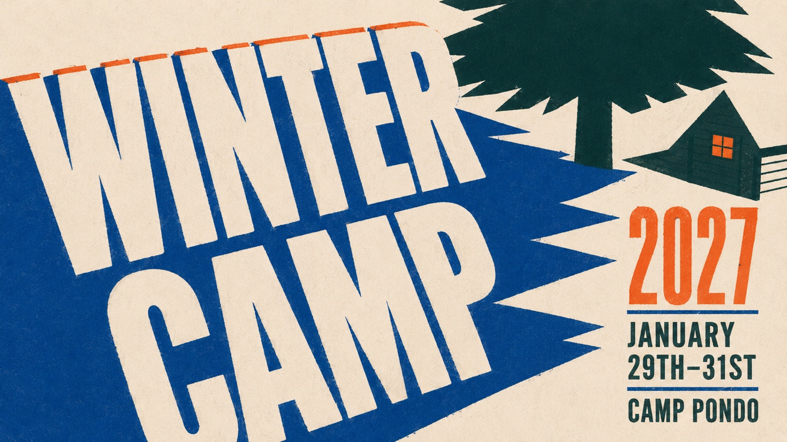

Worship and teaching
Time to worship together and hear from the Bible during the weekend.

CITIZENS CHURCH · WINTER CAMP
A weekend at Camp Pondo for students in grades 6–12.
Parents, fill out the interest form and we’ll send you the registration details.
Winter Camp 2027, January 29–31 at Camp Pondo.
Step one: tell us you’re interested and we’ll send registration details. The form is free and does not reserve a spot.
WHAT TO EXPECT
Time to worship together and hear from the Bible during the weekend.
A full weekend away with your group, with room to hang out and talk.
Tubing, zip line, giant swing, bouldering, arts and crafts, and games. Activities depend on the weather.
Camp is at Pondo.
See Pondo’s winter camp page (opens a new tab)
DETAILS
More details will come with registration.
Friday, January 29 through Sunday, January 31, 2027, at Camp Pondo in Running Springs, California (31324 Green Valley Lake Road). We’ll let you know how we’re getting there and back.
Students in grades 6–12, junior high and high school.
$325 per student. We’ll send payment details with registration. We’ll also have several fundraisers before camp that students can sign up for to help cover the cost.
No. It just puts you on our list so we can send you registration details. You don’t pay anything.
We’ll send you the departure and return times, a packing list, and the registration deadline.
SIGN UP
Fill out the interest form with your contact info and we’ll send you registration details.
STEP ONE
This is how you get on the list for Winter Camp 2027 ($325 per student). It takes about a minute. We will email you registration details. For parents and guardians age 18 and older. You will enter only your own contact information. Please do not include a student’s name or any medical or other sensitive information.
This form only puts you on our list. It doesn’t register your student or take payment.
Fill out the interest form (opens a new tab)